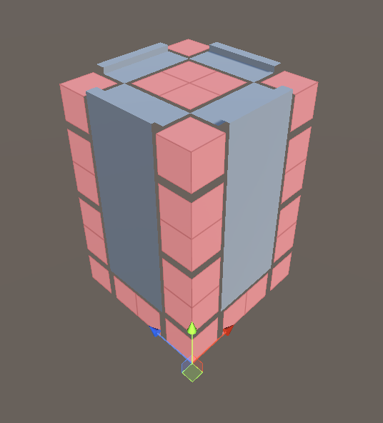

Voxel Collapse has many tools to help you create dual grid tilesets quickly and iteratively. This suggested workflow shows how to incorporate each tool so that it helps you the most. Once you are comfortable with the tools you may find a different workflow works better for you and your team - once you find something you're comfortable with please let me know at anthonydiggle@carbidefunction.co.uk so that future updates do not unnecessarily disrupt your workflow.
This tutorial should take around 30 minutes to complete. Experimenting further to gain a deeper understanding is recommended, and feel free to ask any questions in the Discord server.
Set Up
Follow the Getting Started Guide to completion to set up your world with an example tileset. We will build on this to set up your tileset.
Creating and Importing the First Two Tiles
Create your tileset's first two tiles. In this tutorial we will create a skyscraper building tileset, which will require a flat wall and a wall-to-roof lip tile.
It doesn't matter about quality or style yet, but you must get the dimensions correct.
Tip
If you do not have a strong preference for tile sizes, it is easiest to start with 1×1×1 tile dimensions.
The importer derives tile settings from the tile models directly by making some assumptions about the models, lifting the mark-up work from the artist's shoulders. You will need to follow the assumptions so that the importer can do its job effectively:
Tiles you make must be manifold within the bounds of the tile - the mesh must form a continuous surface up until the borders of the tile.
Tiles must not have faces on their borders.
All tile vertices must be inside the bounds of the tile.
Tiles must always be aligned to the grid.
Tile object pivots must be at the center of the model.
Caution
For the moment, avoid two-sided and transparent materials. Voxel Collapse supports these materials, but requires further set up to do so.
Still in your modelling software, ensure that the tiles are distinct objects, and that their pivots are at the centre of the tile. For the flat wall, this will be in the middle of the plane. For the roof top, it will be halfway along the lip edge.
Export this model and import it into Unity. Ensure at this stage that the imported model has two children: the two tiles you've just created.
Note
2 tiles are required for the first working tileset because Unity's import process will remove the root object if there is only one child. Voxel Collapse assumes that the source model is an empty parent and each child is a tile.
Select the tileset importer asset, then drag the new model asset onto it. Make sure that the dimensions in the importer are the same as the model, and click "Process models". A window will come up telling you that the Unity model importer settings prevent it from being imported by Voxel Collapse, select Continue to allow Voxel Collapse to alter the importer settings and continue with the import.

Finally, let's see the tiles being placed. Select the grid placer game object in your scene. Press U to open the voxel editor and click to create a 2×2 tower. Press W to close the tool and trigger tile placement. They should place tiles along the straight walls and red shapes on the corners and roof.

If your tower doesn't look like this, you can start debugging your tileset.
Creating a Skeleton Tileset
Once your workflow can reliably import models from the modelling software to Voxel Collapse, you can focus solely on the modelling software for a while.
Create a list of dual grid tiles you expect will be very common in your maps. For example, when creating a skyscraper tileset, you would need:
- a straight wall tile (already made)
- a straight wall lip tile (already made)
- a straight wall bottom to floor tile
- a flat tile for the floor
- a flat tile for the top of the roof (could be the same as the floor tile)
- a wall corner tile
- a wall corner lip tile
- a wall corner bottom to floor tile
Within your selected modelling software, create your first pass of all of these tiles. Feel free to explore your style here. Remember that all tiles must match the dimensions that you have set up previously. Consider how tiles connect to one another along their bounding-box faces while modelling the tiles.
Voxel Collapse matches tiles by the edges that run along their faces. If one tile face has one edge running across it, it will not match with a tile face that has 2 edges, even if they lie on the same line.

Tip
Keep it simple! For your first tileset, try to use 5 or fewer edges for each tile face. This makes it much easier to create the matching pattern on other tiles.
Once you have created your skeleton tileset, export it to Unity with the same filename as your previous exported model. Now, select your tileset importer asset and click "Process models" in the properties window.
Iterating on the Tileset
In the Unity scene that contains the GridPlacer component, click on the placer object and change to the grid placement tool (default keyboard shortcut U).
Create a level that matches the tileset's use - as we're making a skyscraper tileset, create a few towers, and a bridge connecting two of the towers.
Return to a built-in Unity tool (default keyboard shortcut W).
The grid will turn darker for a moment while Voxel Collapse calculates tile placement, and will then be replaced by the tiles you created.
Note that alongside your tiles there will also be some red grid objects.
The red grid objects are wildcards. Voxel Collapse places wildcards where there are no appropriate tiles. These are a necessary part of creating your tileset iteratively: there is nothing wrong with them during development, but you should strive to avoid them in production levels.
Check to make sure that your flat tiles are placed on the floor and that they connect to one another correctly, and that they are also placed on any plateaus and connect to the clifftop lip tiles.
In general, wildcards can be eliminated in one of two ways. The first is done by the level designer: they can change the map to avoid the layouts that lead to the missing tiles.
The second option is done by an artist. The level designer passes the map to the artist, who then models the missing tiles and adds them to the tileset.
We will act as the artist now, and model the missing tiles.
Choose one wildcard to focus on. Ideally, the wildcard would have many adjacent modelled tiles and few (or zero) connections to other wildcards. Create this tile in your modelling software, in the same file as the other tiles. Ensure that the edges along the faces match up with the adjacent models in the map.
Tip
It can be very helpful to spend a few seconds considering how to connect the tile faces and even sketching a rough concept piece for each new tile before starting modelling.
Reexport your tileset to Unity. Find the importer asset and click "Process models". Your tileset asset will be updated, and you can now click your grid placer scene object and click "Force Map Rebuild" to use your new models.
Hopefully, you will immediately see your new model has replaced some of the wildcards. If you notice any issues, such as the new tile not being placed or some of the adjacent tiles have become wildcards, start debugging your new tile.
Once Voxel Collapse correctly uses your new tile in tandem with the existing tiles, pick another wildcard to focus on and replace with a modelled tile - repeat this until your model is complete.
Further Reading
If you creating your models perfectly first time you will not have been prompted to debug your tileset. This is an important technique when developing tiles as it allows you to identify mismatches between tiles. If you haven't already used the debugger, create an intentionally mismatching tile now and use the tileset debugger.
You may find it easier to create larger features in a traditional modelling workflow and use automated tools to slice your tiles up when exporting them. Look at Model Slicing to see an example of this and see if it's appropriate for your use case.